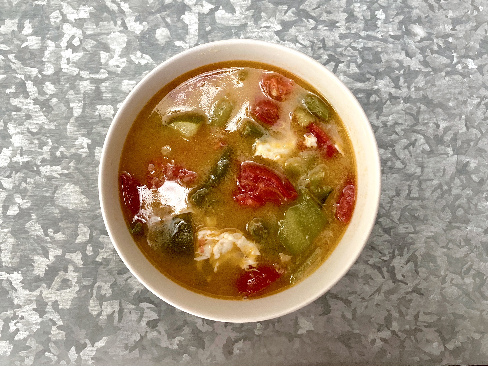
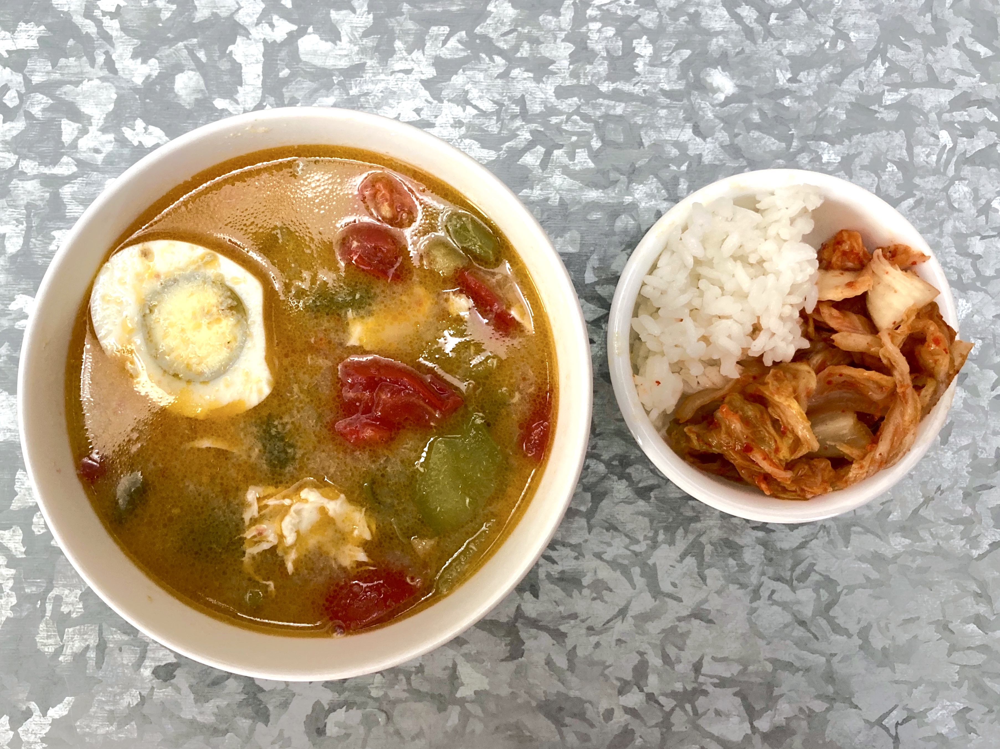
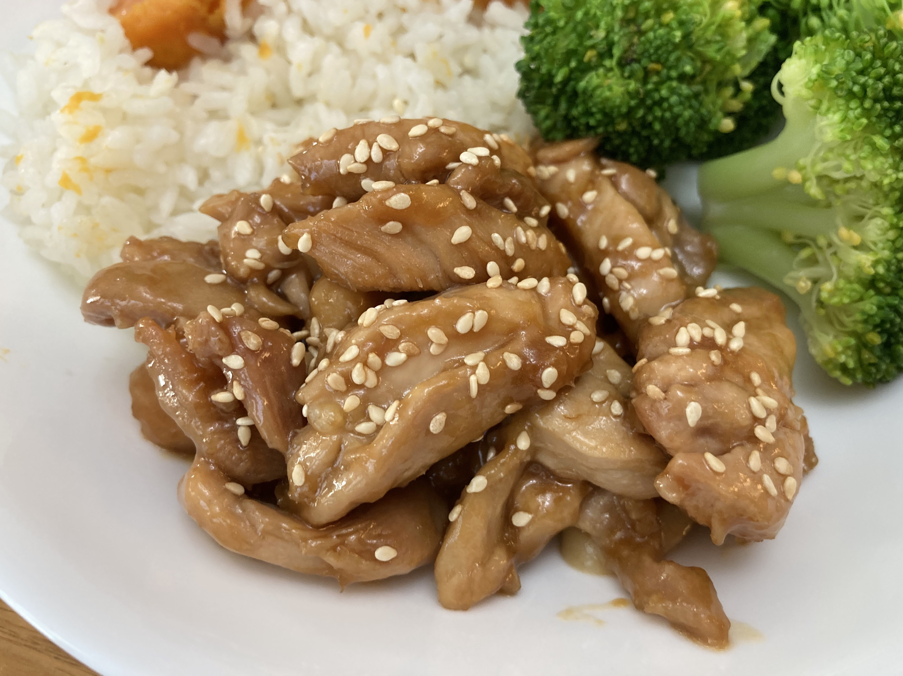
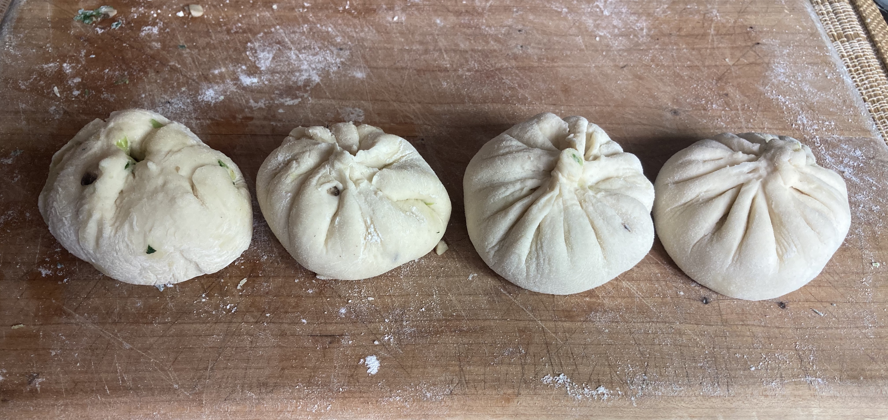
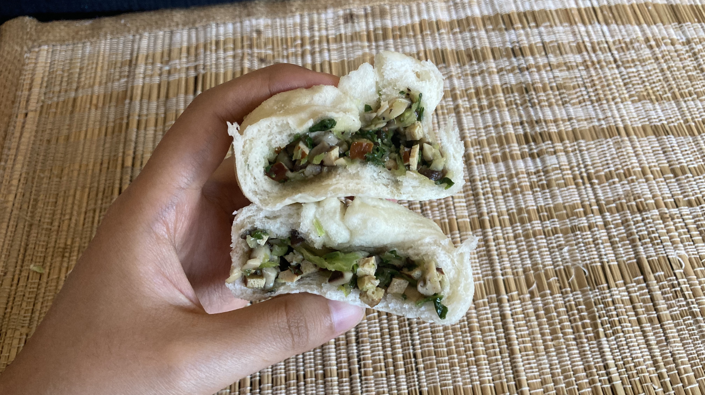

Peach Cobbler Cake
Rating:🍑🍑🍑🍑🍑🍑🍑🍑
7/15/2020

I know that peach cobblers aren't Asian, but this is my blog so I can do whatever the hell I want (imagine I said that in Pickle's southern accent lol). This recipe isn't the classic peach cobbler with biscuit dough, it better resembles a coffee cake with fruit baked in. Either way, it tastes good because sugar always tastes good.
Wonderful peaches provided by the Xin fam ~
I prepped the peaches by cutting an X in the skin and blanching them. The satisfying moment of this recipe was peeling off the skin because it all came off in one go, and the peach was so smooooooth. The dough was just like cake dough, and I sprinkled some cinnamon sugar on top for some extra crunchiness.
The cake rose a lot more than I was expecting, so I didn't add enough peaches to balance it out. I also should've poured more of the sugary peach syrup on top that was left over from coating the fruit in sugar and starch.


Why does the naked dough look like a tortilla?
Even though I didn't add enough peaches, I'm still rating this an 8/10 because with the right ratio of fruit to cake and a little ice cream on top, it would be perfecto. Even Yana finished a whole piece and she usually doesn't even eat food (I was very flattered). I would definitely make this again, and I probably will in the next week.
Recipe: King Arthur Flour
(Their website is very nice)

Luffa Tomato Soup
Rating:🍅🍅🍅🍅🍅🍅
7/15/2020

For those who don't know what luffa (or loofah) is, it's basically a Chinese gourd that people also use to make exfoliating sponges (yummy!). My grandparents gave us a loofa and a bunch of other veggies from their garden, so my mom and I decided to make a ton of soup with them.

So much health owo
Usually the recipe calls for luffa and tomatoes, but we also added beans, onions, and zucchini. We always use the vegetarian Better Than Bouillon soup base, which I 10/10 recommend for vegetarians. We sliced and diced the veggies and dumped in some corn. After pressure cooking the soup for a little, we swirled in some egg for some nice egg drop (very satisfying to watch).

That egg looks very overcooked and sad
This recipe was a 6/10 because it makes you feel like a healthy bitch when you eat it, but it's not very exciting to eat on its own. For a veggie soup it tastes pretty good because we added a lot of ginger to the broth, and it's very easy to make. Together with rice and kimchi, it's a pretty solid meal.
Recipe: ¯\_(ツ)_/¯ Just eyeball it
Teriyaki Chicken
Rating: 🐔🐔🐔🐔🐔🐔🐔🐔
7/15/2020

I decided to start off simple and make a classic dish: teriyaki chicken. Although teriyaki sauce is associated with Japanese cuisine, it actually originated in Hawaii when Japanese immigrants combined sweet pineapple and sugar with savory soy sauce. Dishes like this one that use thick teriyaki glazes are Asian American, while the term "teriyaki" refers to a method of traditional fish preparation in Japan with a similar sweet and salty marinade.
Watching the sauce bubble was very satisfying...
When making this recipe, I sliced the chicken before cooking it instead of the other way around like the video. I tossed the chicken in cornstarch before stir frying it, but the cornstarch stuck to the pan because I didn't use enough oil and formed an annoying film on the bottom. But all was fine, because the sauce covered up all of the happy little accidents.
Too bad I didn't have scallions to garnish.
I gave this recipe an 8/10 because it was very quick and easy to make, and it tasted really good! The balance of sweetness and saltiness was right up my alley. Even when I didn't do the recipe perfectly, it still turned out really well. I'd recommend this dish to beginner cooks or amateur cooks like myself. Well, that's the review. Bawk bawk bois, I'm out.
Recipe: A's Cookbook
Steamed Vegetable Bao Buns
Rating: 🥟🥟🥟🥟🥟
7/12/2020

Last Friday I made these vegetable buns (baos) with my two amigos Pickle Xin and Noelle Crawfish. Although a meat filling probably would have tasted better, these were a good vegetarian alternative. These buns were pretty flavorless, so we had to eat them with soy sauce.


Pickle had a weird obsession with poking the buns... (look at those tiny fingers)
The prep work was really tedious for this recipe because we had to finely dice all of the filling ingredients. We did this while we let our little dough boi rise from the yeast. I accidentally added way too much white pepper to the filling and not enough soy sauce, so it tasted kinda weird (but still kinda good). The recipe called for wayyy too little seasoning, and it still ended up a little bland after doubling the seasoning amounts. Next time I would add more sugar and salt to the dough too.

Folding the baos was the most difficult but my favorite part. Clearly from the picture above you can see that the art of folding has a large learning curve, but eventually I got the hang of it.
We tried to stuff as much filling as possible inside the baos so they wouldn't fall over and be sadder than they already were. Noelle also dumped way too much flour onto her board so her buns were extra pale and dry (very sad).

Look how fluffy he isssssss!
We were very surprised when the baos actually turned out well. The dough was fluffy (although bland) and the filling didn't leak out while it was steamed. Even my ugly first attempt cooked well. The satisfying tearing open of the baos made our long efforts worth it.
I rated this recipe 5/10 because the final result looked pretty good and folding the baos was fun. However, the score is reduced by the blandness of the baos, partially because meat filling usually tastes a lot better. But for a vegetarian alternative, this recipe was a little better than I expected.
Recipe: The Woks of Life